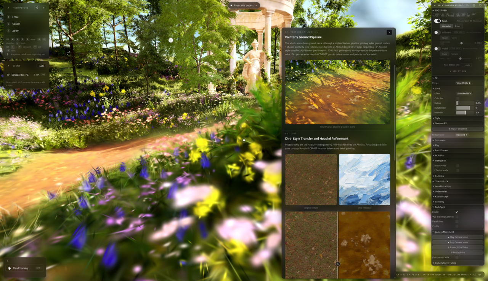
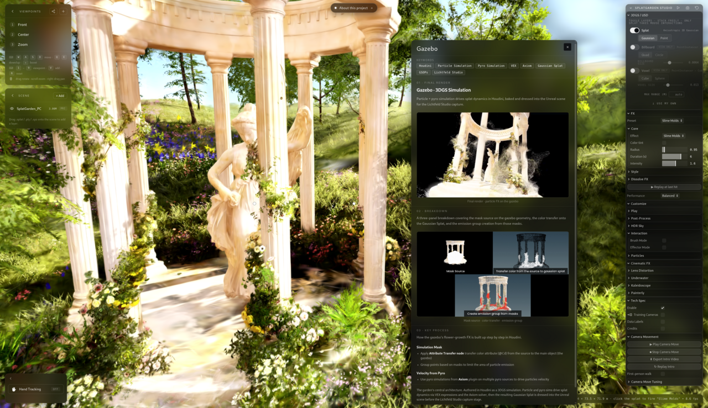
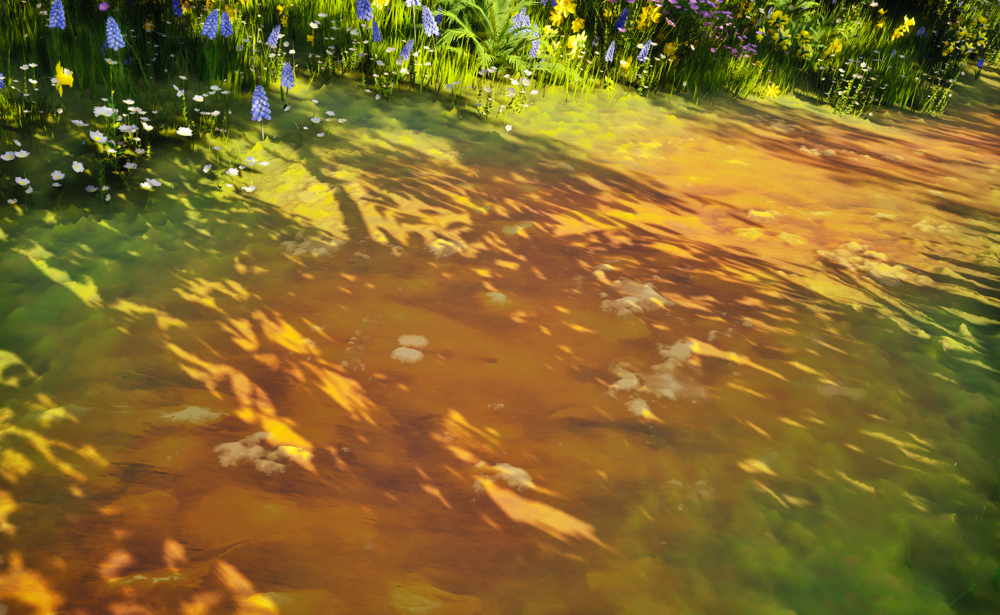
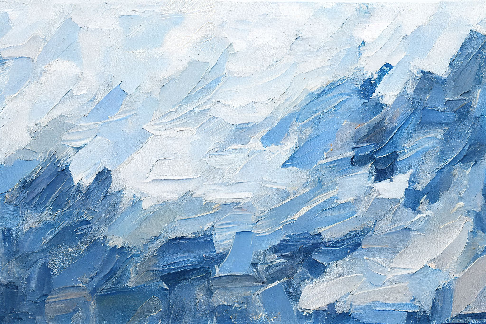
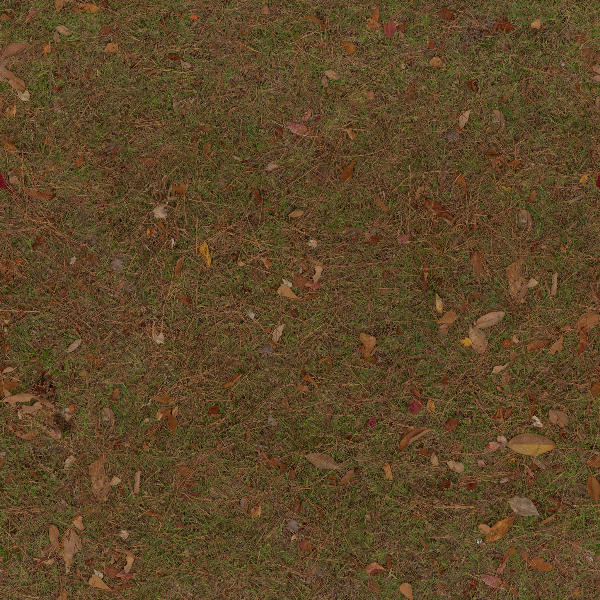
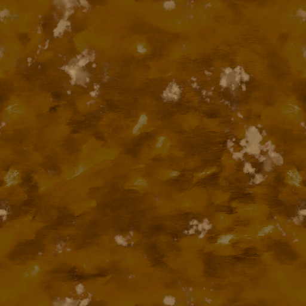

Week 10 - Winter 2026 Summary
Mar 09 - 11, 2026
Splat Garden
Interactive Experience that involves Gaussian Splats, particle simulation, VAT, USD and more
Splat Garden Demo by Danci Shen
Team Members and Responsibilities
- Danci Shen - Interactive, Unreal Engine TD and Virtual Production
- Yiyi Long - Scene Layout and Asset Creation (Daffodil)
- Yiqi Zheng - VAT/USD and Graph Hyacinth Textures
- Yichen Shi - Asset Creation (Grape Hyacinth) and Houdini Effects Simulation
- Ben Jones - Virtual Production and Environment Assets
- Xinyi Liang - Environment Assets
- Itim Kongsakulvatanasook - AI Stylization Tool and Gaussian Splat with Simulation in Houdini
Supervising Faculty
- Dr. Deborah R. Fowler - Visual Effects Professor, SCAD

AI Stylization on Splat Garden

Gaussian Splat with Simulation on Splat Garden
Gaussian Splat with Simulation
Latest Work
Appling pyro simulation and particle simulation to Gaussian Splat
Test 03
Gaussian Splat with particle and pyro simulation test
Test 02
Gaussian Splat with particle simulation and procedural noise
Test 01
Gaussian Splat with particle simulation and procedural noise
Applied AI Stylization Tool
Integrated a custom AI Stylization Tool into VFX and game pipeline

Final result fo the stylized textures from AI stylization tool and Houdini COPNET

Style Reference

Original Realistic Texture
Ouput of the texture from AI Stylization Tool

Final result after adjusting output from the AI tool in Houdini COPNET
Gaussian Splat Relighting
GSplat Relighting Method 01: Light Overlay
GSplat Relighting Method 02: Bake Lighting in Color Attribute with GSOPs